접근 구간
Baseline / GUIDANCE
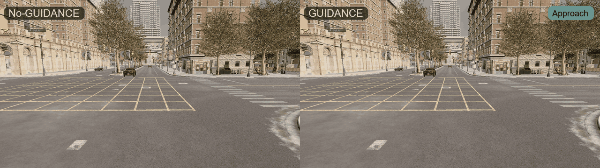
동일 사건의 초반 접근 구간에서 두 조건의 주행 반응을 나란히 보여줍니다.
전방 cut-in 상황에서 GUIDANCE trajectory-prior 조건이 No-GUIDANCE baseline보다 ego 차량과 following vehicle string의 반응을 더 선제적이고 부드러운 방향으로 바꾸는지 비교합니다.

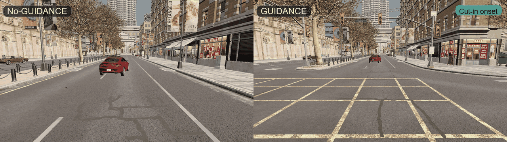
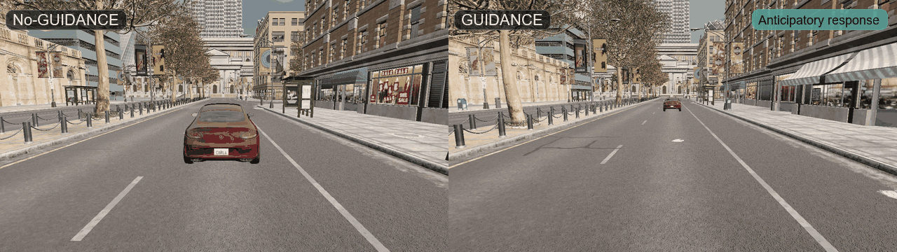
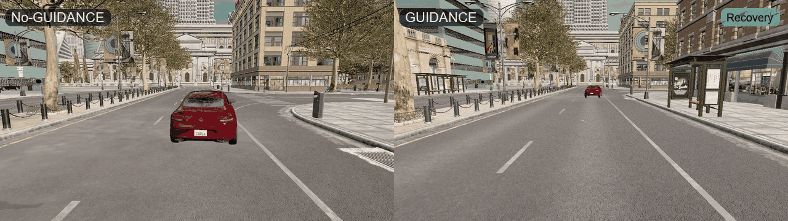
Additional trial views
위 네 장면은 하나의 대표 사건을 단계별로 나눈 것이고, 아래는 서로 다른 side-by-side trial GIF에서 가져온 추가 예시입니다.
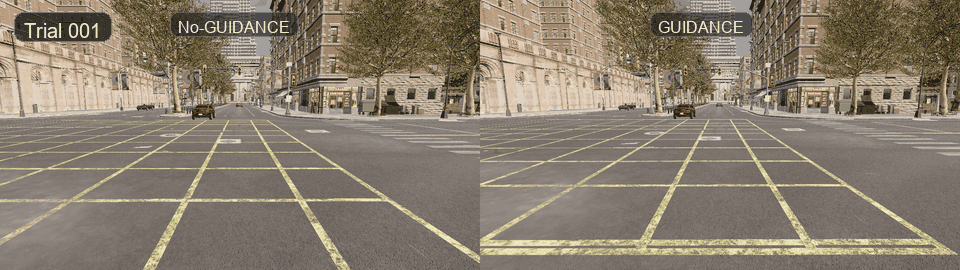
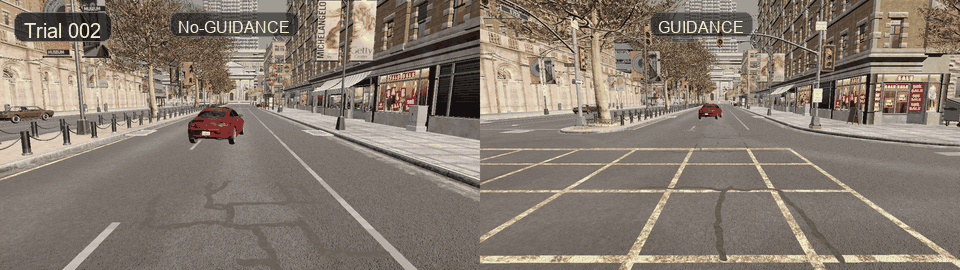
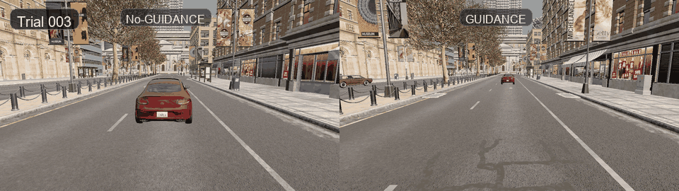
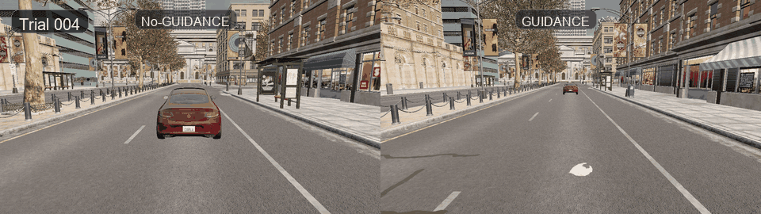
150 paired trials
모든 값은 같은 randomized scenario parameter를 공유하는 No-GUIDANCE / GUIDANCE paired trial에서 계산했습니다.
Visual evidence
표는 전체 결과를 요약하고, 그래프는 지표별 차이와 paired-trial 안정성을 보여줍니다.
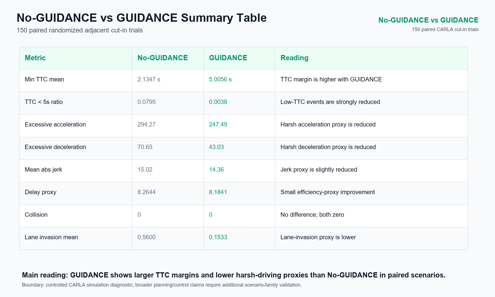
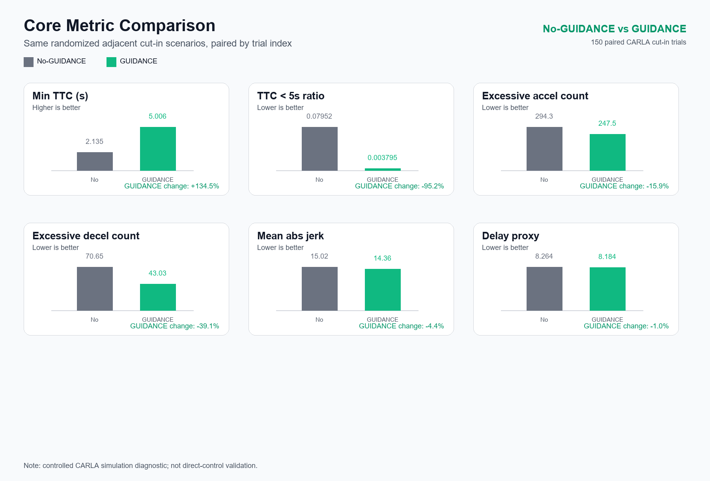
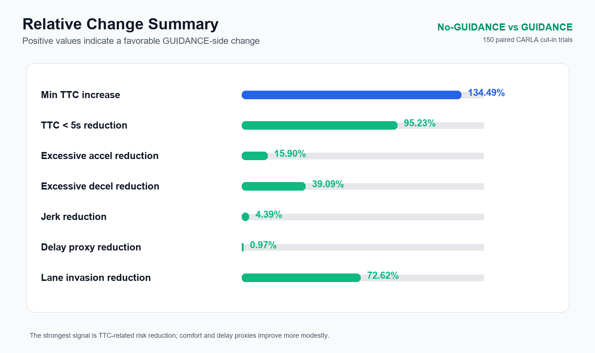
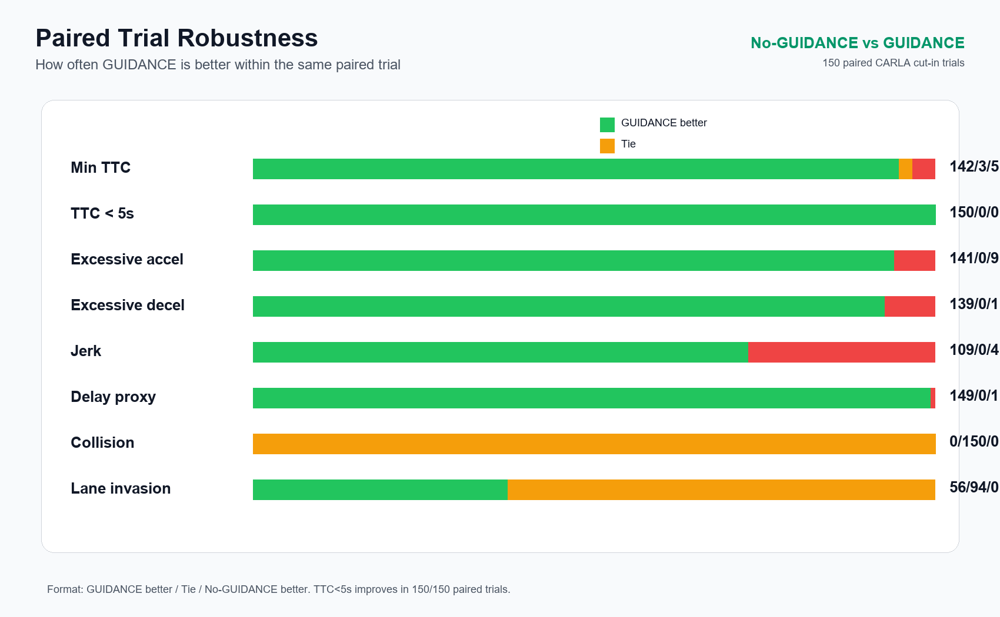
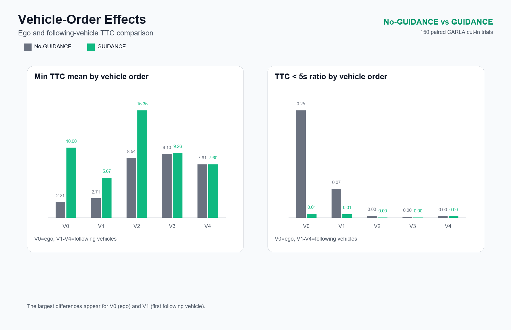
Main reading
| Metric | No-GUIDANCE | GUIDANCE | Reading |
|---|---|---|---|
| Min TTC mean | 2.1347 s | 5.0056 s | GUIDANCE 조건에서 전방 위험 접근에 대한 시간 여유가 증가했습니다. |
| TTC < 5s ratio | 0.0795 | 0.0038 | low-TTC 이벤트가 크게 감소했습니다. |
| Excessive acceleration | 294.27 | 247.49 | 급가속 proxy가 감소했습니다. |
| Excessive deceleration | 70.65 | 43.03 | 급감속 proxy가 감소했습니다. |
| Mean absolute jerk | 15.02 | 14.36 | jerk는 완만하게 감소했습니다. |
| Delay proxy | 8.2644 | 8.1841 | traffic efficiency proxy는 소폭 개선 방향을 보였습니다. |
Claim boundary
이 페이지의 결과는 controlled CARLA simulation diagnostic입니다. GUIDANCE가 이 P2 adjacent cut-in scenario에서 No-GUIDANCE보다 더 큰 TTC margin과 낮은 harsh-driving proxy를 보였다는 시뮬레이션 기반 근거를 제공합니다.
다만 이것은 아직 실제 차량 제어 성능 인증이나 모든 주행 상황에 대한 일반화 검증은 아닙니다. 이후 lead sudden braking, cut-out reveal, dense traffic string, curved road, visibility stress scenario까지 확장해야 합니다.